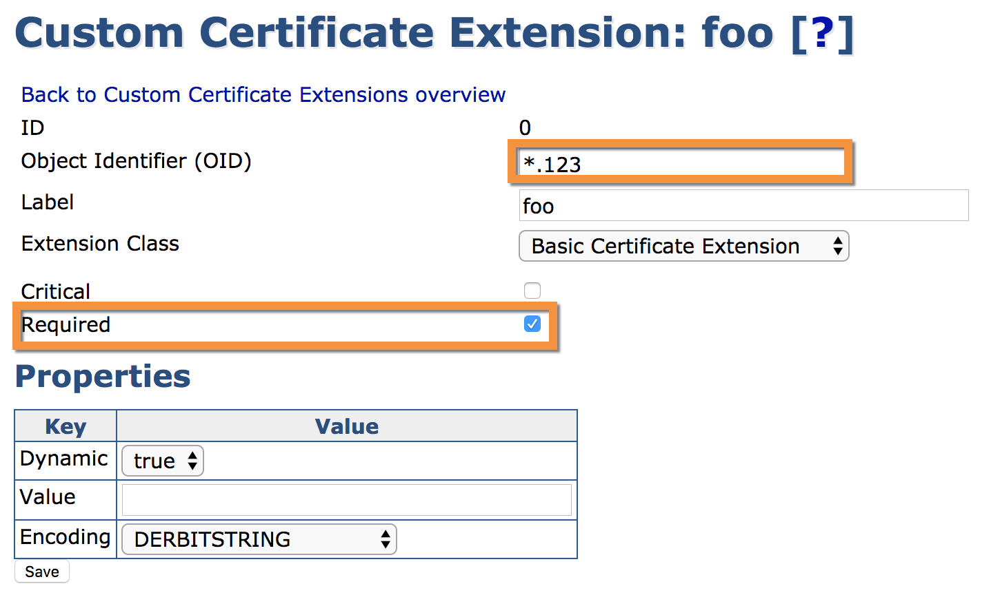

EJBCA 6.15 Release Notes
Version 6 of EJBCA is beginning to near its end, and the team are looking forward with great anticipation to be able to give you all a look at what's coming with EJBCA 7. That said, we're sending off the last feature release of EJBCA 6 with a helluva bang: full support for the ACME REST protocol!
Features
ACME Support
Nearly done by the release of 6.14 but not quite there, EJBCA 6.15's main feature is our support for the ACME protocol, up unto and including all mandatory features in draft 12. Naturally we've implemented it with full support for proxying communications over Peers through our RA, and support for multiple configurations using aliases as we do with other protocols.
 As it's a commonly asked question, we'd like to state here that our implementation has been verified against Certbot, PJAC and ACME Tiny, and our documentation describes how to configure them.
As it's a commonly asked question, we'd like to state here that our implementation has been verified against Certbot, PJAC and ACME Tiny, and our documentation describes how to configure them.
Wildcards for Custom Certificate Extensions
We've added two minor features to Custom Certificate Extensions: 
Firstly, we've added wildcards (identified by an '*') to the OID field, which allows a defined extension to match against any array of extensions defined in an incoming request (e.g. in the above example, any request containing an extension ending in .123. The second addition is the Required property, which is by default checked. Unchecking this property makes an extension available to be requested in the enrollment request but not necessary.
Roadmap Update
Development of EJBCA 7.0 is now underway, and while many of you will be pleased at the new Common Criteria certification that's incoming, the initial UI changes won't be monumental at first. This is because most of the work is being done behind the scenes to pay back a monumental technical debt which has been incurred over the years in the UI module, and in order to maintain stability while the UI is being worked on we're making the changes as slow and gradual as possible. What you'll be seeing next over the coming months will first be a normalization of UI functionality (making sure that similar actions across different pages behave in the same way), followed by a massive renovation of our CSS. After that we'll progressively start introducing more tangible improvements to the UI.
Upgrade Information
Read the EJBCA 6.15 Upgrade Notes for important information about this release. For upgrade instructions and information on upgrade paths, see Upgrading EJBCA.
Change Log: Resolved Issues
For full details of fixed bugs and implemented features in EJBCA 6.15.0, refer to our JIRA Issue Tracker.
New Features
ECA-7019 - Write documentation for ACME
ECA-7185 - ACME persistence: Create ORM scripts AcmeAccountData
ECA-7187 - Add ACME to Statedump
ECA-7188 - Add ACME to Configdump
ECA-7198 - ACME persistence: Create ORM scripts/entities/CRUD for AcmeOrderData
ECA-7199 - ACME persistence: Create ORM scripts/entities/CRUD for AcmeAuthorizationData
ECA-7200 - ACME persistence: Create ORM scripts/entities/CRUD for AcmeChallengeData
ECA-7202 - ACME system tests - analyse, improve and enable skipped system tests
ECA-7237 - Swagger problems with ACME module
ECA-7244 - Add ability to link in compiled JARs as plugins
ECA-7250 - PKCS11 enable using CKA_LABEL also when a sun attributes file is used
ECA-7253 - Add a method to SignSession in order to sign arbitrary payloads
ECA-7257 - Add possibility to disable Crypto Token key generation for specific PKCS#11 drivers in GUI
ECA-7259 - Add Amazon CloudHSM p11 driver to known P11 drivers in web.properties
ECA-7264 - Re-use endentity for ACME cert renewal flow
ECA-7287 - Add Required checkbox to the custom extension configuration screen and logic in backend
ECA-7288 - Add wildcard identifier to the Certificate Extension OIDs
Tasks
ECA-7138 - Ensure quality in ACME
ECA-7203 - Verify that ACME works with aliases
ECA-7207 - Verify & document External Account Binding in ACME
ECA-7252 - test ACME cert renewal and deacticvation flows with acme4j
ECA-7275 - Test ACME wildcard cert issuance and pre-authorization with certbot.
ECA-7323 - Document Peer RA Protocol Rules
ECA-7324 - Document Optional Custom Extensions
ECA-7331 - Verify if Swagger UI for works for ACME API. If it does, add documentation to confluence. If not, hide the ACME part from swaggerUI
Improvements
ECA-6921 - ACME persistence: CRUD for AcmeAccountData
ECA-7114 - Improved test for ACME dns-01 validation.
ECA-7120 - Upgrade EJBCA/CESeCore to BouncyCastle 1.60
ECA-7125 - Precompile Swagger UI WAR and add to ejbca/dist
ECA-7194 - Create certificate only for order from request
ECA-7204 - Re-enable ACME in GUI
ECA-7227 - Remove "CA Service Activation" from Certificate Profiles
ECA-7233 - Remove JavaDoc and source files from lib directory
ECA-7234 - Use a StringBuilder to improve efficiency creating database protection
ECA-7239 - Make DNSSEC optional for dns validation
ECA-7240 - EJBCA_TRUNK_MARIADB_UBUNTU1204_JBOSS711GA_PUPPET tests failing
ECA-7243 - Hide external account binding option from ACME GUI
ECA-7247 - Improve the New Terms of Service Agreement functionality of EJBCA ACME server.
ECA-7248 - Use EJBCA name style for issuerDN in CMP revocation request handler
ECA-7251 - Remove clover jar from ziprelease
ECA-7304 - Update default DNSSEC trust anchors
ECA-7305 - Upgrade handling for new "DNS port" setting for ACME
ECA-7310 - Improve feedback from CAA Validator
ECA-7311 - Possible serialization failure when editing Access Rules in Advanced Mode
ECA-7316 - Missing svn:keywords
Bug Fixes
ECA-6872 - Cannot enroll user with Cyrillic characters using RA web + appliance
ECA-7096 - Don't store certificate meta data option makes expireDate not published, causing archiveCutOff
ECA-7154 - SQL Grammar Exception on MS SQL Server v12
ECA-7193 - Move check of requested certificate validity from finalize to newOrder
ECA-7201 - Documentation link to Renew CA gives 404
ECA-7211 - OCSP signing certificates aren't always published for throwaway CAs with revoke enabled
ECA-7215 - CMP: RA Name Generation Scheme with DN component serialNumber does not work
ECA-7220 - DROP table scripts for AcmeNonceData is missing
ECA-7224 - Broken class-path references in ctlog.jar causes WARN messages in the JBoss log file
ECA-7231 - StringTools B64 failing unit test after upgrade to BC 1.60
ECA-7238 - EjbcaWS doesn't handle timeformats ending with 'Z'
ECA-7242 - EJBCA is trying to parse the string 'KeyId' as an integer when authorising an admin
ECA-7245 - NPE when issuing certificate via certbot
ECA-7246 - EjbcaWSTest fails with clearpassword
ECA-7249 - HSMKeyTool --force flag does not work when using an attributes file
ECA-7258 - Security: information leak in debug log
ECA-7260 - CryptoToken key generate button shown when it should not
ECA-7268 - RA Web search End Entities doesn't render if not authorized to search certificates
ECA-7269 - Regression: JSF errors on JBoss AS 7.1.1
ECA-7274 - Test ACME wildcard certificate issuance and pre-authorization with acme4j
ECA-7277 - DatabaseProtection on CertificateProfileData incompatible between <=6.11 and >= 6.12
ECA-7285 - Add HEAD request for the endpoint revokeCert
ECA-7286 - Fix NPE which happens when de-registering account with certbot
ECA-7302 - Name Constraints error when saving existing CA
ECA-7306 - GUI bug in Edit CA page.
ECA-7307 - 'Close' button not functioning under 'View Certificate'
ECA-7322 - Import renewed CA certificates, for External CA does not import to CertificateData, for Externally Signed CA does not publish